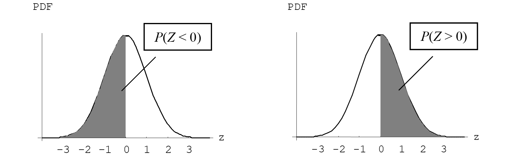
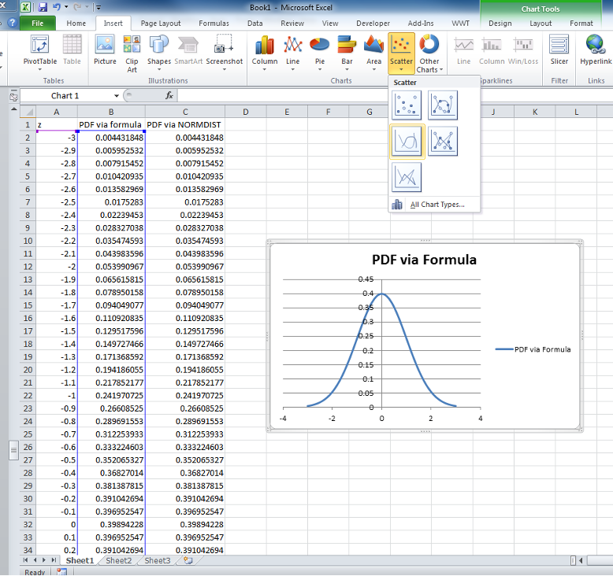

library(ggplot2)
# Define the mean and standard deviation
mean <- 284.3
sd <- 5.52
# Create a sequence of x values
x_values <- seq(mean - 4*sd, mean + 4*sd, length.out = 1000)
# Create a ggplot
ggplot(data.frame(x_values), aes(x = x_values)) +
stat_function(fun = dnorm, args = list(mean = mean, sd = sd)) +
labs(title = "PDF", x = "Gestation Period (days)", y = "Density") +
theme_minimal()Probability distributions
Biological systems are variable, and we consequently need statistical methods to cope with this variability in drawing valid inferences from our data. As a consequence of this variability, we can never say anything with absolute certainty based on biological data: there will always be some “doubt” due to chance variation. Not surprisingly, we need the tools and language of probability to assist us with quantifying our level of “doubt” when we make our conclusions.
We won’t deal with probability theory to any great degree in this unit of study, but just outline some of the key concepts HSC Maths concepts that we will build on.
Probability
Simple Probability
Probability of an event occurring:
\(P(E)=\frac{\text{Number of ways an event can occur}}{\text{Total number of possible outcomes}}\)
- \(P(E) = 0\) the event is impossible
- \(P(E) = 1\) the event is certain (must happen)
Example: A person is chosen at random to write about his/her favourite sport. Thirty-five people like tennis, 51 like cricket, 17 like squash, 23 like baseball and 62 like swimming. Find the probability that the article will be about:
- swimming: \(\frac{62}{188}=\frac{31}{94}\)
- squash or tennis: \(\frac{17+35}{188}=\frac{52}{188}=\frac{13}{47}\)
Complementary Events
Probability of an event not occurring = 1 – probability of event occurring.
\(P(E) =1− P(E)\)
Exercises
- The probability of rain on the 23rd January each year is \(\frac{17}{53}\). What is the probability of no rain on the 23rd January 2007?
- The probability of a seed producing a red flower is \(\frac{7}{8}\). Find the probability of the flower producing a different colour.
Non-Mutually Exclusive Events
Non-mutually exclusive events have some overlap - more than one thing can happen at the same time.
\(P(A \text{ or } B) = P(A) + P(B) – P(A \text{ and } B)\)
Exercise
- In a group of 20 people, 14 like to watch the news on television and 17 like to watch old movies. Everyone watches one or the other or both. If I choose one person at random, find the probability that the person likes watching:
- Both the news and the old movies;
- Only the news.
Product Rule
When we do more than one thing (e.g. toss 2 coins, plant 5 seeds, choose 3 people, throw 2 dice) we multiply the probabilities together.
\(P(A and B) = P(A).P(B)\)
Exercises
- A box contains 3 black pens, 4 red pens, and 2 green pens. If I draw out 2 pens at random, find the probability that they are both red.
- The probability of a seed germinating is 0.91. If I plant 5 seeds, find the probability that they all germinate.
Probability Density Functions
Probability density functions (PDFs) are a way of mathematically describing the shape of distributions. Examples:
Binomial: \(P(X = k) = \binom{n}{k} p^k (1-p)^{n-k}\)
Poisson: \(P(X=k) = \frac{\lambda^k e^{-\lambda}}{k!}\)
Normal: \(f(x) = \frac{1}{\sigma\sqrt{2\pi}}e^{-\frac{1}{2}\left(\frac{x-\mu}{\sigma}\right)^2}\)
For continuous distributions we define the area under the curve as the probability. This area is equal to 1 or 100%.
Types of distributions
Just as there are different types of data (continuous, discrete etc.), there are different types of statistical distributions. Statistical distributions are generally categorized as either continuous e.g. normal distribution, or discrete e.g. binomial distribution. In this unit of study we will only consider continuous distributions.
Probability for Continuous Distributions
For discrete variables, it makes sense to talk about the probability of a specific outcome occurring, e.g. the probability of exactly three insects caught. However, for continuous variables, this is more problematic.
Example:
Consider the gestational period of cattle measured in days. What is the probability that it is exactly 295 days long? We don’t mean in the range 295-296 days, or 294.9999 to 295.0001 days, but exactly 295 days. Clearly, this probability must be infinitesimally small - effectively zero!
The way around this is to talk about the probability of getting a value within a range. For example, if Y represents gestational length, we might want the probability that it is between 285 and 305 days long, \(P(285 \le Y \le 305)\), or at least 295 days long, \(P(Y \ge 295)\).
We summarise the probability distribution of a statistical distribution by means of a probability density function (PDF), which we graph against the outcome, Y. The PDF for gestational length might show the shape below.
We interpret the area under the curve as the probability. Further, the total area under a curve is 1. For example, the probability of sampling a gestational length of between 285 and 305 days, \(P(285 ≤ Y ≤ 300)\) is:
# Load the ggplot2 library
library(ggplot2)
# Define the mean and standard deviation
mean <- 284.3
sd <- 5.52
# Define the range for the shaded area
lower_bound <- 285
upper_bound <- 300
# Create a data frame for the x values
x_values <- seq(mean - 4*sd, mean + 4*sd, length.out = 1000)
df <- data.frame(x = x_values)
# Create the ggplot object
ggplot(df, aes(x)) +
stat_function(fun = dnorm, args = list(mean = mean, sd = sd), colour = "blue") +
geom_area(stat = "function", fun = dnorm, args = list(mean = mean, sd = sd),
xlim = c(lower_bound, upper_bound), fill = "blue", alpha = 0.2) +
labs(title = "PDF", x = "Value", y = "Density") +
theme_minimal()There are other continuous distributions other than the commonly cited normal distribution. The continuous distributions you are likely to encounter during your undergraduate degree are: normal, student’s T, chi square, F, log normal, exponential, gamma.
Highlighting just one of these… If a variable \(\log{y} = y'\) has a normal \(N(\mu,\sigma^2)\) distribution, then the original variable has a log normal distribution.
library(ggplot2)
# Data for standard normal distribution
x_norm <- seq(-5, 5, length.out = 1000)
y_norm <- dnorm(x_norm)
# Data for log-normal distribution
x_lognorm <- seq(0.01, 3, length.out = 1000) # Avoid starting at 0 to prevent log(0)
y_lognorm <- dlnorm(x_lognorm)
# Data frame for standard normal
df_norm <- data.frame(x = x_norm, y = y_norm, Distribution = 'Standard Normal')
# Data frame for log-normal
df_lognorm <- data.frame(x = x_lognorm, y = y_lognorm, Distribution = 'Log-Normal')
# Combine data frames
df <- rbind(df_norm, df_lognorm)
# Plot
ggplot(df, aes(x = x, y = y, color = Distribution)) +
geom_line() +
facet_wrap(~Distribution, scales = 'free_x') +
theme_minimal() +
labs(title = "Log-Normal PDF vs. Normal PDF",
x = "Value",
y = "Density")The Normal Distribution
We began speaking about the normal distribution in Section 2.5.1. Recall that it is also sometimes referred to as the Gaussian distribution (named after a man who contributed significantly to this area of mathematics). This is the “bell-shaped” distribution commonly observed in histograms of biological and environmental data e.g. height, weight, gestation lengths, etc. It is central to most statistical theory.
 The centre of the curve is located at μ and σ indicates the spread or width of the curve. For all distributions, a type of shorthand has been introduced to denote the name of the distribution that a particular variable, \(y\), follows. For example, you should read the abbreviation \(y \sim N(\mu,\sigma^2)\) as ’the variable \(y\) is normally distributed with mean \(\mu\) and variance \(\sigma^2\).
The centre of the curve is located at μ and σ indicates the spread or width of the curve. For all distributions, a type of shorthand has been introduced to denote the name of the distribution that a particular variable, \(y\), follows. For example, you should read the abbreviation \(y \sim N(\mu,\sigma^2)\) as ’the variable \(y\) is normally distributed with mean \(\mu\) and variance \(\sigma^2\).
As we will discover later, for data that follows a normal distribution we expect that 95% of observations fall in the range defined by the mean plus or minus 1.96 standard deviations and 99% fall in the range defined by the mean plus or minus 2.58 standard deviations. This is the basis for the following approximations (that you may already be familiar with):
- 68% of data lie within \(\pm 1 \sigma \text{ of } \mu\)
- 95% of data lie within \(\pm 2 \sigma \text{ of } \mu\)
Recall that if you know the mean and standard deviation of the normal curve, you can calculate its exact equation.
PDF for normal distribution: \(f(x) = \frac{1}{\sigma\sqrt{2\pi}}e^{-\frac{1}{2}\left(\frac{x-\mu}{\sigma}\right)^2}\)
where \(\sigma\) is the population standard deviation and \(\mu\) is the population mean.
The \(N(0,1)\) distribution \((\mu = 0, \sigma^2 = 1)\) is called the standard normal distribution, usually termed \(Z\), i.e. \(Z \sim N(0,1)\). Probability tables (including standard normal probability tables) are published in most statistical texts. They show the proportions of data found below a value in the distribution. For the normal distribution, only probabilities for the \(N(0,1)\) distribution are tabulated. For other normal distributions e.g. \(N(20,5)\) the probabilities are obtained by calculating the standardised value:
\(Z=\frac{y-\mu}{\sigma}\)
If we substitute \(\sigma = 1\) and \(\mu = 0\) into the PDF for the normal, we find that the PDF for the standard normal distribution is
\(f(z)=\frac{1}{\sqrt{2\pi}}e^{-\frac{1}{2}z^2}\)
Calculating Probabilities for Standardised Normal Values
To calculate probabilities in the standardised normal distribution, remember that the values given in the CDF are cumulative probabilities - i.e. probabilities of values of z occurring below a particular value. For example, looking at the pnorm(0) we see the probability associated with a Z value of 0 is 0.5. This means that half the values are below 0 (i.e. 50%). Using R - if we want to know what the probability of obtaining a value greater than the point of interest, then we subtract probability of obtaining a value less than point of interest from 1 (the total area under the curve). To find the probability of a value occurring between two points, subtract the probability of being less than the lower value from the probability of being less than the upper value. The easiest way to understand this is to draw the curve showing the area required, as in the figures below.
pnorm(0)
Examples
\(P(Z < 1.85)\) where \(Z \sim N(0, 1)\)
\(P(Z < 1.85) = 0.9678\)
pnorm(1.85)# Load the ggplot2 library
library(ggplot2)
# Define the mean and standard deviation
mean <- 0
sd <- 1
# Define the range for the shaded area
lower_bound <- -4
upper_bound <- 1.85
# Create a data frame for the x values
x_values <- seq(mean - 4*sd, mean + 4*sd, length.out = 1000)
df <- data.frame(x = x_values)
# Create the ggplot object
ggplot(df, aes(x)) +
stat_function(fun = dnorm, args = list(mean = mean, sd = sd), colour = "blue") +
geom_area(stat = "function", fun = dnorm, args = list(mean = mean, sd = sd),
xlim = c(lower_bound, upper_bound), fill = "blue", alpha = 0.2) +
labs(title = "PDF", x = "Value", y = "Density") +
theme_minimal()\(P(Z > 1.85)\) where \(Z \sim N(0, 1)\)
\(1 - P(Z < 1.85) = 0.0322\)
1-pnorm(1.85)# Load the ggplot2 library
library(ggplot2)
# Define the mean and standard deviation
mean <- 0
sd <- 1
# Define the range for the shaded area
lower_bound <- 1.85
upper_bound <- 4
# Create a data frame for the x values
x_values <- seq(mean - 4*sd, mean + 4*sd, length.out = 1000)
df <- data.frame(x = x_values)
# Create the ggplot object
ggplot(df, aes(x)) +
stat_function(fun = dnorm, args = list(mean = mean, sd = sd), colour = "blue") +
geom_area(stat = "function", fun = dnorm, args = list(mean = mean, sd = sd),
xlim = c(lower_bound, upper_bound), fill = "blue", alpha = 0.2) +
labs(title = "PDF", x = "Value", y = "Density") +
theme_minimal()\(P(–1 < Z < 2)\) where \(Z \sim N(0, 1)\)
\(P(Z < 2) \approx 0.9772\) (from R)
\(P(Z< –1) \approx 0.1587\) (from R)
\(P(–1 < Z < 2) \approx 0.9772 – 0.1587 \approx 0.8185\)
pnorm(2)
pnorm(-1)
pnorm(2) - pnorm(-1)# Load the ggplot2 library
library(ggplot2)
# Define the mean and standard deviation
mean <- 0
sd <- 1
# Define the range for the shaded area
lower_bound <- -1
upper_bound <- 2
# Create a data frame for the x values
x_values <- seq(mean - 4*sd, mean + 4*sd, length.out = 1000)
df <- data.frame(x = x_values)
# Create the ggplot object
ggplot(df, aes(x)) +
stat_function(fun = dnorm, args = list(mean = mean, sd = sd), colour = "blue") +
geom_area(stat = "function", fun = dnorm, args = list(mean = mean, sd = sd),
xlim = c(lower_bound, upper_bound), fill = "blue", alpha = 0.2) +
labs(title = "PDF", x = "Value", y = "Density") +
theme_minimal()Calculating Probabilities for Non-Standardised Normal Values
Suppose that from long term studies, it is known that the gestation length of cattle (in days) is normally distributed with a mean of 285 days and a standard deviation of 10 days i.e. \(y \sim N(285, 10^2)\). The following is a plot of the theoretical distribution (PDF).
library(ggplot2)
# Define the mean and standard deviation
mean <- 285
sd <- 10
# Create a sequence of x values
x_values <- seq(mean - 4*sd, mean + 4*sd, length.out = 1000)
# Create a ggplot
ggplot(data.frame(x_values), aes(x = x_values)) +
stat_function(fun = dnorm, args = list(mean = mean, sd = sd)) +
labs(title = "PDF", x = "Gestation Period (days)", y = "Density") +
theme_minimal()Approximately 68% of data lie within \(\pm 1 \sigma\) of \(\mu\), i.e., \(285 \pm 10 =\) \(275\) to \(295\) days. So if a pregnancy is selected at random, there is a probability of approximately 0.68 that it is between 275 days and 295 days in duration.
Approximately 95% of data lie within \(\pm 2 \sigma\) of \(\mu\), i.e., \(285 \pm 10 =\) \(265\) to \(305\) days. So if a pregnancy is selected at random, there is a probability of approximately 0.95 that it is between 265 and 305 days in duration.
# Load the ggplot2 library
library(ggplot2)
# Define the mean and standard deviation
mean <- 285
sd <- 10
# Define the range for the shaded area
lower_bound <- 275
upper_bound <- 295
# Create a data frame for the x values
x_values <- seq(mean - 4*sd, mean + 4*sd, length.out = 1000)
df <- data.frame(x = x_values)
# Create the ggplot object
ggplot(df, aes(x)) +
stat_function(fun = dnorm, args = list(mean = mean, sd = sd), colour = "blue") +
geom_area(stat = "function", fun = dnorm, args = list(mean = mean, sd = sd),
xlim = c(lower_bound, upper_bound), fill = "blue", alpha = 0.2) +
labs(title = "PDF", x = "Value", y = "Density") +
theme_minimal()# Load the ggplot2 library
library(ggplot2)
# Define the mean and standard deviation
mean <- 285
sd <- 10
# Define the range for the shaded area
lower_bound <- 265
upper_bound <- 305
# Create a data frame for the x values
x_values <- seq(mean - 4*sd, mean + 4*sd, length.out = 1000)
df <- data.frame(x = x_values)
# Create the ggplot object
ggplot(df, aes(x)) +
stat_function(fun = dnorm, args = list(mean = mean, sd = sd), colour = "blue") +
geom_area(stat = "function", fun = dnorm, args = list(mean = mean, sd = sd),
xlim = c(lower_bound, upper_bound), fill = "blue", alpha = 0.2) +
labs(title = "PDF", x = "Value", y = "Density") +
theme_minimal()Calculating Probabilities for Non-Standardised Normal Values
Examples
Assume that cabbage yields are known to be normally distributed with a mean \(\mu = 1.4\) kg / plant, and a standard deviation \(\sigma = 0.2\) kg / plant.
Find \(P(Y < 1)\) where we assume that \(Y \sim N(1.4, 0.2^2)\).
pnorm(1, mean = 1.4, sd = 0.2)Find the 5th and 95th percentile of cabbage yield Y, where we assume that \(Y \sim N(1.4, 0.2^2)\).
Now we are looking for the points on the x-axis given the probability (rather than finding a probability as we have to date).
We can use the qnorm function to find the quantiles.
qnorm(0.05, mean = 1.4, sd = 0.2) # 5th percentileqnorm(0.95, mean = 1.4, sd = 0.2) # 95th percentileExploring the Properties of the Normal Distribution - fun with Excel
- There a many examples above of using ggplot to draw the normal distribution. However, you can also use Excel to draw the normal distribution. This is a useful skill to have as you can use Excel to draw the normal distribution for any mean and standard deviation, not just the standard normal distribution.
- Plotting the standard normal density function in Excel
- Recall that the probability density function (PDF) for the normal distribution is
\(f(x) = \frac{1}{\sigma\sqrt{2\pi}}e^{-\frac{1}{2}\left(\frac{x-\mu}{\sigma}\right)^2}\)
- For the case of the standard normal distribution \(Z \sim N(0,1)\) the formula becomes
\(f(z) = \frac{1}{\sqrt{2\pi}}e^{-\frac{1}{2}z^2}\)
We will evaluate this function over the range -3 < Z < 3. That is, we will substitute various values of z (between -3 and +3 in steps of 0.1) into the formula above to obtain their corresponding probability densities.
Once we’ve obtained these probabilities we’ll plot them on the y-axis and the z values on the x-axis to create our own bell-shaped normal curve in Excel.
Instructions:
- In cells A1:C1 type the following column headings: ‘z’; ‘PDF via formula’; ‘PDF via NORMDIST’.
- In cells A2:A62 create a column of z values than range from -3 to +3 in incremental steps of 0.1. Type -3 in A2 and -2.9 in A3, highlight both cells and drag down with the black cross which should appear once you put the cursor near the bottom right hand corner.
Now we’re going to obtain the corresponding probabilities in 2 different ways – you should get exactly the same answers.
In cell B2, enter the formula for the standard normal distribution using a cell references for z. Pick up the + at the bottom right hand corner and drag the mouse (left hand button) to drag this formula down the column to obtain the rest of the answers. You don’t need to re-enter the formula in each row.
Some Excel functions for entering the formula are
| Mathematical symbol/function | Excel function |
|---|---|
| e2 | =EXP(2) |
| \(\pi\) | =PI() |
| \(\sqrt{4}\) | =SQRT(4) |
| \(2^2\) | =2^2 |
- In cell C2, insert the Excel function NORM.DIST and fill in the arguments [Remember the standard normal density function has a mean of 0 and variance of 1]. There is another shortcut method to apply this formula for Z from -3 to +3 in one step. Point the mouse to the bottom right hand corner of C2; the mouse will change shape to +; then simply double click on the + and the formula will automatically be filled down to as many cells as are not empty alongside.
- Tidy up the formatting of your spreadsheet by centering columns and individual cells, and bolding important labels.
- Use the menus to plot the standard normal distribution, Insert > Scatter > Scatter with Smooth Lines. The screenshot below should help you.

Consider how you might do the above exercise for a non-standard normal distribution…
Normality Tests
Normality tests are the first introduction you’ll have to formal statistical hypothesis testing!
For every hypothesis test you (or the computer) need to perform the following steps (as a minimum):
- Set null & alternate hypotheses;
- Calculate test statistic;
- Obtain P-value and or critical value;
- Draw a conclusion about your null hypothesis from the P-value (or by comparing the test statistic with the critical value).
We’ll expand these steps soon…
There are quite a few normality tests that statisticians have developed over the years. We will focus on one of these. The Shapiro-Wilk test is a test of the null hypothesis that the data is normally distributed. The test statistic is calculated using the data and then using this test statistic, a probability value (P-value) is obtained. From the P-value we make a decision whether or not to reject the null hypothesis (i.e. whether or not to reject the normality assumption).
We will be using tetrachlorobenzene levels (TcCB, ppb) in 100 soil samples as our example data set to show how R performs the test. We have seen previously that the distribution of this data is HIGHLY POSITIVELY skewed.
# Load the data
TcCB <- read.csv("data/TcCB.csv")
# Perform the Shapiro-Wilk test
shapiro.test(TcCB$TcCB)The null hypothesis is that the data is normally distributed. The P-value is 0.0001, which is less than 0.05. Therefore, we reject the null hypothesis and conclude that the data is not normally distributed.